2026-11-06
VOL 402
读者，早。
机房和运输网络需要另一套阅读方式。OpenAI承诺为未来自有自营园区承担新增电力与基础设施成本，Zipline拿到扩张资金并计划增加配送站点，Humble仍要推进试点与验证。它们分别涉及公共成本、已运营服务的扩张和商业部署前的准备，不宜合成一张已经兑现的未来图景。

Meta宣布在Muse移动端、网页和Mac端推出实时语音与表情化身，先从美国开放。用户可打断对话，也可选择仅语音、对话旁显示化身或全屏交流；数百种声音可切换。AI眼镜与Muse Charm的语音支持仍是后续计划，不能视作当天已覆盖所有设备。
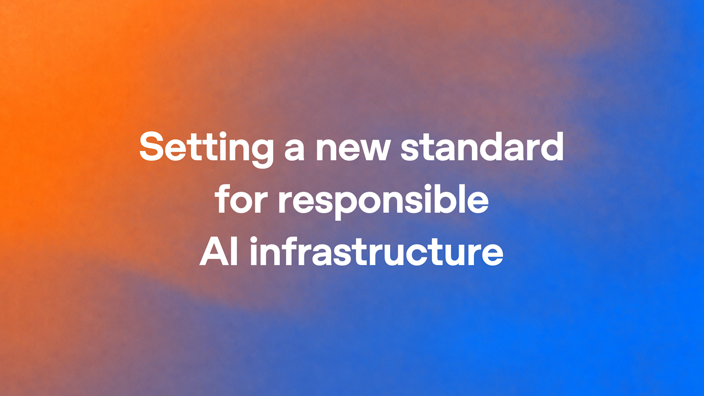
OpenAI公布National Community Compact及计算园区政策蓝图：未来由其拥有并运营的园区，将承担用电和所需基础设施全部成本，在重大支出前提供财务保障，公开场地水电与噪声资料，并让居民尽早参与。与公职人员的保密协议仅保留安全、商业秘密等狭窄例外。这是公司承诺与政策提案，不是已经生效的行业法规，也不自动覆盖所有合作方园区。
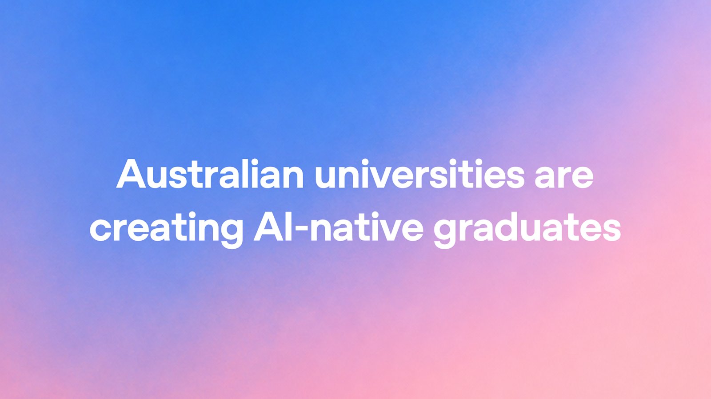
OpenAI在当天公告中介绍澳大利亚多所大学的合作与分阶段开放：UNSW面向逾八万名师生扩展ChatGPT Edu；悉尼大学计划试点后于2027年第一学期覆盖全部学生；La Trobe计划2027年第一季度普及访问。案例包括临床模拟和教师沟通练习。这是新的合作与进展报道，不能把全部规划人数写成当天已活跃使用人数。
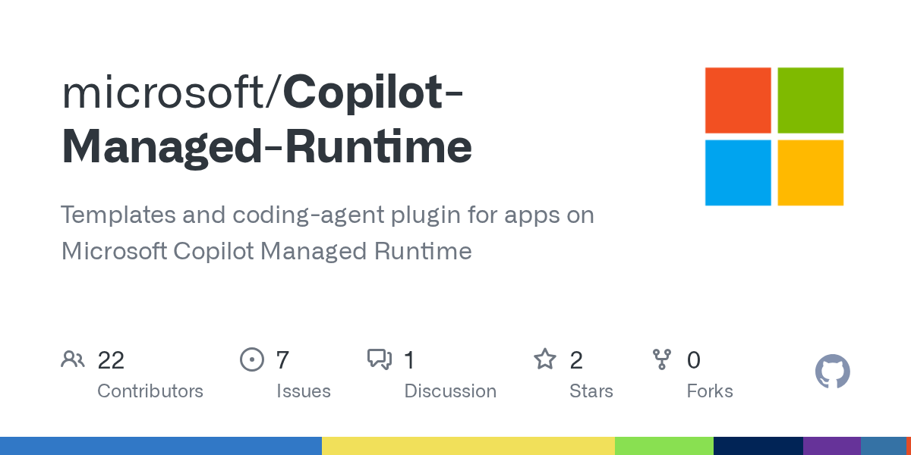
微软在npm发布Copilot Managed Runtime应用Vite插件0.5.0。官方仓库提供React、TypeScript与Vite 8模板，以及面向Claude Code和GitHub Copilot的插件，帮助构建继承Microsoft 365组织管控的业务应用。仓库于11月4日创建，本条记录的是11月5日包发布及公开材料；运行时仍处公开预览，接口和工具可能变化。
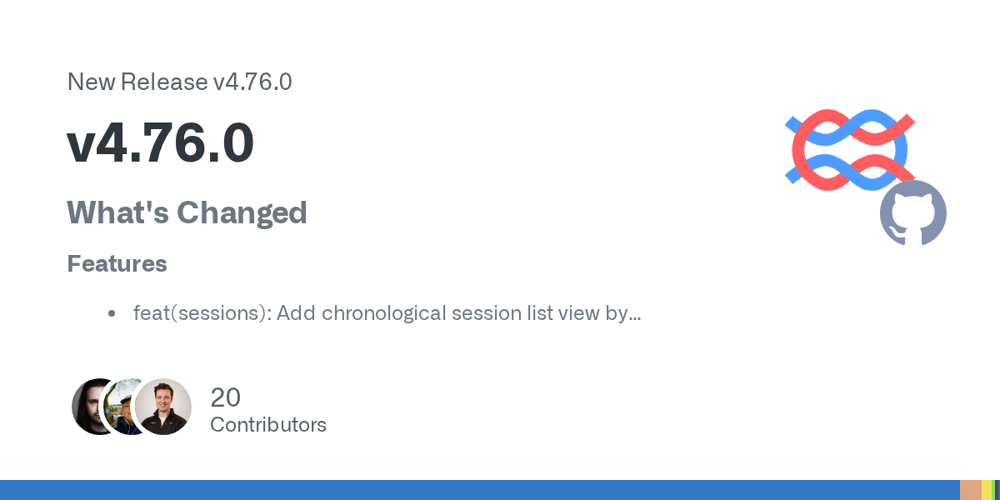
Langfuse v4.76.0增加按时间排列的会话列表、追踪预览中的会话页签，并将Topics摘要、分配和规则接入公共API、MCP及应用内智能体。版本还记录部分追踪、会话与评分读取的审计事件，并在自托管Docker Compose中提供AI网关。这些是观测与管理能力的更新，不代表被记录的回答自动变得正确。

OpenAI发布面向安全研究的GPT-6 Cyber，通过Daybreak向获批防御方提供更深入的授权攻防能力，尚非无条件公众开放。公司自测ExploitGym得分48.5%，前代GPT-5.6 Cyber为32.1%；其Preparedness Framework将该模型的网络能力评为Critical。范围遵守测试中的高分来自特定评估设置，不能推导为真实部署绝不越界。
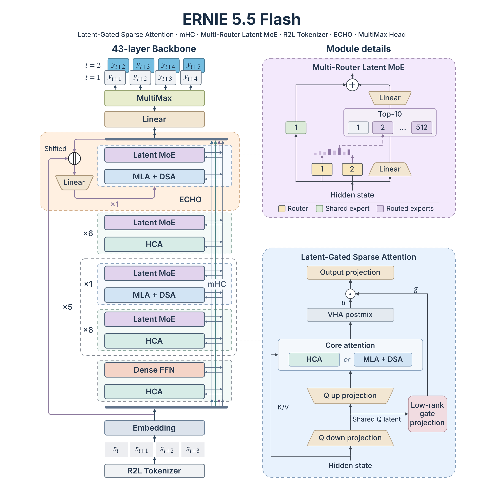
百度开放文本模型ERNIE-5.5-Flash-Base：总参数280B、每token激活14B，以33.5T tokens从头预训练，训练上下文最高128K，支持后续微调和推理扩至1M。这是没有中期训练和后训练的Base检查点。自定义许可排除欧盟、英国和韩国；相关产品服务年收入不超过五千万美元的商用须发送一次通知并标识Powered by ERNIE，超过门槛须事先取得书面授权，不能当作无条件开源商用。

Google推出Gemini Omni 1.2 Flash，在Gemini API与企业平台正式提供，原生视频从最长十秒延长到十五秒，支持三至十五秒逐秒设定和多轮对话修改。720p价格降至每秒0.07美元，比Omni 1.1低30%；角色、产品、运动和声音参考的跟随能力亦有改进。应用端按产品与订阅逐步开放，厂商仍列出快速运动、复杂物理等改进空间。

NVIDIA为既有Cosmos 3 Nano家族新增Transfer-Auto、Sim-Auto、Sim-Transfer和Sim-Bimanual四个开放权重检查点，均为16B可训练参数的后训练示例，采用OpenMDW1.1条款。用途覆盖多视角驾驶数据、相机与LiDAR同步流式观察、模拟器控制到RGB，以及机器人动作到视频。闭环驾驶仍需模拟运行时更新控制，不能把生成画面直接等同物理真值。
LangGraph 1.2.20为同一任务的每次interrupt分配独立ID，并提供需主动启用的严格恢复模式，拒绝不再等待的ID、空映射或有歧义的回答。默认行为保持原样；对应PR说明该检查对部分嵌套或已被后续状态越过的检查点存在边界，RemoteGraph不会直接转发私有配置键。此为执行状态修补，不是模型推理能力提升。
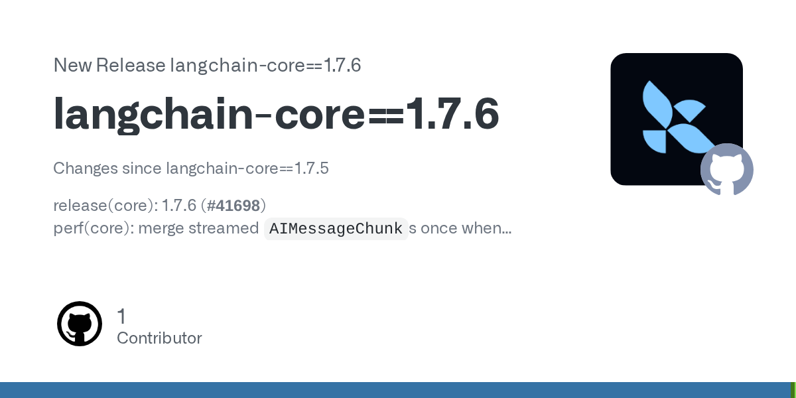
langchain-core 1.7.6集中修补两处流式处理开销：累积Runnable流时只合并一次AIMessageChunk，并让parse_partial_json不再逐字符反复重试。发布记录将其归类为性能改进，没有公布通用加速倍数。它针对框架如何处理返回片段，不改变底层模型价格或保证每个应用端到端响应都会更快。
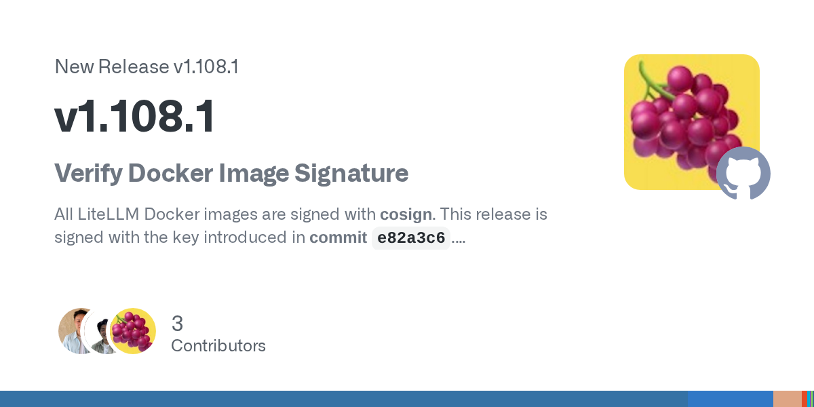
LiteLLM发布1.108长期支持线的v1.108.1补丁，包含主分支修复回移，并在选择代理全局透传凭据时排除团队级deployment。公告同时给出Docker签名验证方法，建议按固定提交哈希取公钥；不能仅凭发布页文字判断本机镜像来源，也不能把这次修补写成未经公告证实的凭据泄漏事件。
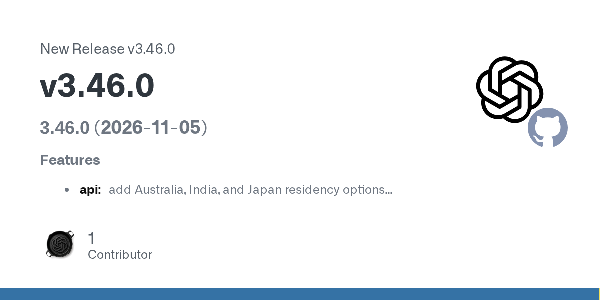
OpenAI Python SDK v3.46.0加入澳大利亚、印度和日本的数据驻留选项，以及图像复杂度、GIF和SVG输出控制，并更新模型目录与代理错误类型。这是11月5日SDK版本的接口支持；图像功能此前已发布，模型名称进入目录也不能单独证明账户获准调用。SDK更新本身不会自动改变既有项目的数据处理区域。
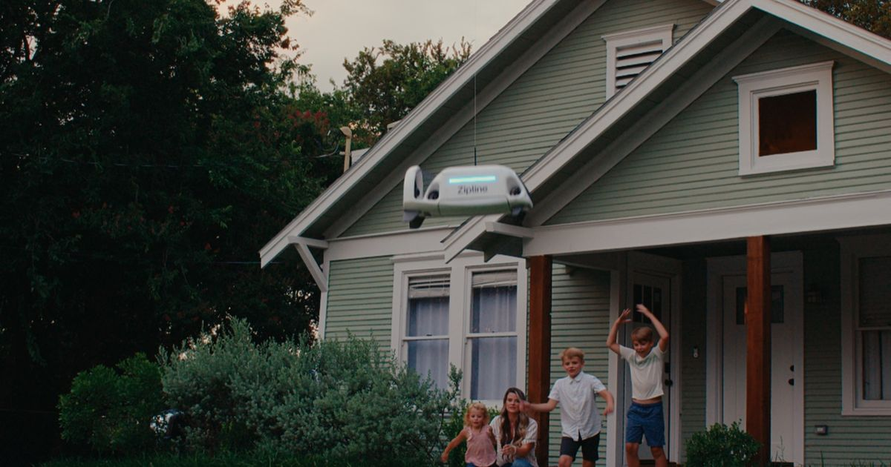
Zipline宣布融资15亿美元，投后估值215亿美元，由Paradigm、WCM Investment Management和Layer Global领投，用于美国制造设施、招聘与全国配送网络。与Walmart的新多年协议计划新增300个站点。公司披露部分长期合作餐厅的配送收入占比从3月的10.8%升至10月的34.9%，这是特定客户样本的公司自报，不是整个配送市场份额。
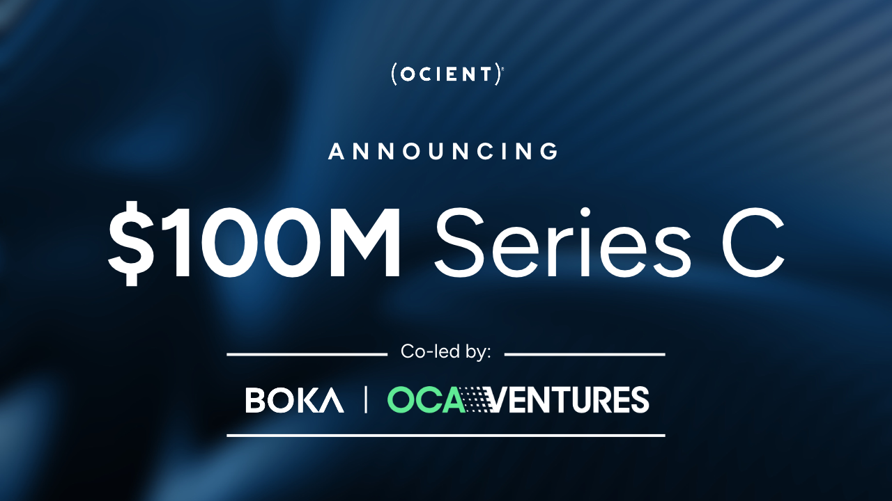
Ocient完成一亿美元C轮，由BOKA Capital和OCA Ventures共同领投，累计融资达到2.6亿美元，资金用于推进面向PB级数据的OcientAIQ解决方案。公司预计本年收入超过上年的三倍，这是前瞻预期；其产品主张让分析在数据引擎内执行、减少数据搬运，不能将这些厂商描述当作独立性能或成本实测。
Humble Robotics宣布5100万美元A轮融资，由Obvious Ventures领投，Eclipse及Energy Impact Partners等参与，累计融资7500万美元。公司将资金投向客户试点、测试验证、早期制造及模块化货运平台，重点是区域线路上的码头到码头运输。公告描述的是为商业部署作准备，不能写成无人货运已规模化盈利。
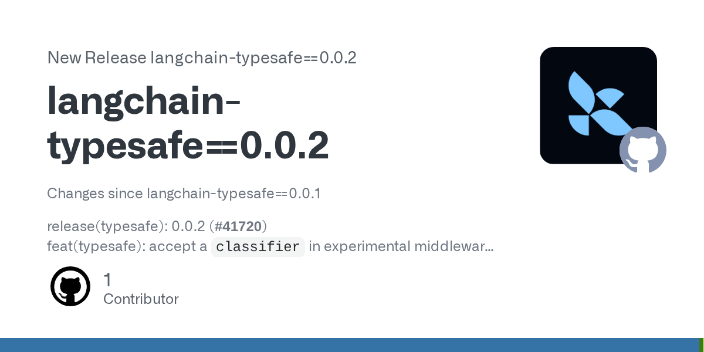
langchain-typesafe 0.0.2允许在实验性ModelRouterMiddleware和AutoModeMiddleware中传入预配置或自定义TypeSafeClassifier。实现PR说明，这让自定义base_url、内部HTTP传输或子类无需先建立一个默认分类器再覆盖属性；不传参数仍保持旧行为。它是现有路由工具的集成更新，不是新基础模型或完全本地分类服务。